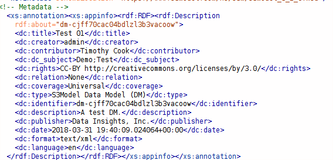

The S3Model Eco-System¶
It is essential here to describe all of the components of the S3Model conceptual eco-system for the reader to appreciate the scope of S3Model and the importance of the governance policies.
The Core¶
At the base of the S3Model eco-system is the Reference Model (RM). Though the reference implementation is in XML Schema format, in real-world applications, a chosen object-oriented language may be used for deployments. Often, tools are available to generate the reference model classes from the XML Schema automatically. This approach is the basis for more extensive S3Model compliant applications. We later in the documentation we cover implementation options for smaller applications such as mHealth (apps for smartphones and tablets, as well as purpose-specific devices such as a home blood pressure monitor).
The next level of the S3Model hierarchy is the Data Model (DM). The DM is a set of constraints against the RM that reduce the valid data options to a point where they can represent a specific healthcare concept. The DM is essentially an XML Schema that uses the RM complex types as base types. This approach is conceptually equivalent to inheritance in object-oriented applications, represented in XML Schema.
Key to Interoperability¶
Since a DM (by definition) can only narrow the constraints of the RM, then any data instance that is compliant with a DM is also compliant in any software application that implements the RM or is designed to validate against the RM. Even if the DM is not available, an application can know how to display and even analyze certain information. For example, if a receiving application does not have a DM for a given data instance, it can discern the DM ID and RM version from the element name and attributes of the root element. It may or may not be able to retrieve the DM from the xsi:schemaLocation attribute. If not, it can infer, based on the reference model version, information about the data by using the names of elements nested within an element with the prefix ‘ms-‘. This information is available because these element names are unique to certain RM complexTypes. If there is a <Xdcount-value> element then that data is from a XdCountType and name is in the preceding <label>.
Model Publication¶
We are not implying that all DMs must be publicly available. It is possible to maintain a set of DMs within a specific political jurisdiction or a particular professional sector or in a company. How and where these DMs are kept are outside the scope of these specifications. Developers proficient in XML technologies can understand how this fits into their application environment and how to use XML Catalogs to reference any local copy.
Bottom-Up vs. Top-Down¶
Now we are at the point where the S3Model eco-system is in contrast to the top-down approach used by other multi-level modeling specifications and the Standards Development Organization (SDO) approach.
In the real world; we know that there can never be complete consensus across the healthcare spectrum of domains, cultures, and languages; concerning the details of a specific concept. Therefore the idea of a maximal data model, though idealistically valid, is realistically unattainable. Several years of participation in, and observation of, these attempts to build consensus has led to the development of the Cavalini-Cook Theory . The probability of reaching consensus among biomedical experts tends to zero with the increase of the number of concepts considered, and the number of experts included in the consensus panel.
In S3Model, participants at any level are encouraged to create domain knowledge models that fit their needs. The RM has no domain-specific semantic context in it to get in the way. This approach allows the design of concept structures as the modeler sees fit for current purpose. The Cluster complexType allows for any data structure [1] to be built to match implementation needs. There is no inherent idea of a specific application in the RM. This approach provides an opportunity for development of small, purpose-specific apps such as mobile or portable device software as well.
How Many DMs?¶
In S3Model, the bottom-up approach makes room for dozens, hundreds or even thousands of DMs to describe a specific concept. Compare the ability with the top-down approach that requires a single model implemented in software that must encompass all descriptions and uses of an idea. This multiplicity of compatible domain knowledge models is achieved through the unique identification of DMs, using a Collision-resistant id (CUID) prefixed with the string, dm-.
DMs are assembled out of pluggable concept models (RMCs) so that modelers can use granular definitions to create any size application model or models, as needed. Modelers and developers can build systems that allow users to choose between a selection of DMs to include at specific points, at run-time. Reuse of existing RMCs in multiple DMs and reusing DMs across various applications make data sharing and analysis easier. However, given that the semantics are in the DM, data consumers can decide if the data fit their needs or how to include individual components (PCM based data) from multiple DMs.
Over time, the Network Effect causes; the cream will rise to the top and the most useful DMs will be reused most often.
With S3Model DMs you can deliver your data with complete syntactic interoperability, and as much semantic interoperability and information exchange as the modeler chose to include in the DM. The governance of DMs is the responsibility of the modeler and publishing organization.
There are stringent guidelines that define what constitutes a valid DM, as seen above.
A Valid DM Must:¶
Be a valid XML Schema as determined by widely available parser/validators such as Xerces or Saxon
Consist of complexTypes that only use the restriction element of complexTypes with a base attribute from the associated reference model
use CUIDs for complexType names, with the prefix of, ‘mc-‘. Example [2]
<xs:complexType name='mc-cjffhejvj002pf3l30ddom8lg' xml:lang='en-US'>
publish a global element for each complexType where a substitutionGroup is required [3]. The element MUST be defined using the same CUID as the complexType with the ‘mc-‘ prefix replaced with ‘ms-‘.
Include the reference model schema from www.S3Model.org using the appropriately defined namespace. Example for release 3.0.0 and later releases, S3Model uses the namespace definition, xmlns:s3m=”https://www.s3model.com/ns/s3m/” [4]
- use the correct substitution group(s) as in this example::
<xs:element name=”ms-cjffhel02003rf3l37e9k3suc” substitutionGroup=”s3m:Audit” type=”s3m:mc-cjffhel02003rf3l37e9k3suc”/>
- define the required namespaces used in the DM as in Figure 1.
- identify the minimum DCMI metadata items as shown in Figure 2.
Figure 1.
Figure 2.
A Valid DM Must Not:¶
- Contain any other language processing instructions required for validating instance data. For example; Schematron rules. While Schematron can be a valuable tool in some processing environments, it is considered implementation specific and not part of the S3Model interoperability framework.
- Import or include any XML Schema document other than its parent S3Model reference model schema.
DM Functionality¶
Structure¶
A DM is just an XML Schema. It uses the xs:include XML element to reference the RM schema from the S3Model website. For performance, a local copy should be persisted and accessed via an XML Catalog The design of DMs separates the model structure from the domain semantics of a complexType. This separation is vital in having a small RM that represents structural components that provide an unambiguous, data query platform which is essential for analytics and decision support.
The use of CUIDs has been controversial and is a perceived barrier by some people. In reality, though they are what allows S3Model to be such a simple, yet a robust solution. The CUID is how we separate the structure and domain semantics. By using the CUIDs for the complexType and XML element names, we build a structure that has only structural semantics. As an example take a look at HL7 CDA or FHIR schemas or NIEM schemas. Notice how they mix domain semantics into the names of complexTypes and elements. This mixture creates a nasty chain of optional domain elements because you cannot know a priori what is going to be needed where. There is an attempt to use attributes to provide some uniqueness to types of entries. However, this has grown out of control to a point where those schemas are very complicated. NIEM attempted to solve the problem by using a multi-level model approach. However, then specified that domain element names MUST be terms from the Oxford English Dictionary. So that limits its usefulness to 5.4% of the global population. NIEM was designed and even named for use in the US. However, that is a bit of a short-sighted development approach considering the global world we live in today.
In designing S3Model, we had the advantage of being able to analyze HL7 v3.x, openEHR, ISO 13606 and other information interoperability attempts. We used these as lessons learned points. The NIEM project began about the same time as S3Model. So NIEM was not as influential.
We realized that this confusion of structure and domain semantics was a crucial problem in the complexity of the models. In openEHR, the focus is specifically about EHR systems, but it introduced multi-level modeling as a constraint-based approach. S3Model takes the constraint-based, multi-level approach along with the data package view. We say data package because you may view a data instance as a message or as a document or as a component of a message or a document. An S3Model data instance is just that. They can be small or large, and they can be combined into documents or messages or standalone; depending upon the implementation needs. This componentized approach is part of the multi-level paradigm.
Semantics¶
With the reusability and structural simplicity out of the way we can now discuss the issue of what does the data mean?
If you are not familiar with RDF, you may want to read more at LinkedDataTools or directly from the W3C Specifications.
The world of data exchange is composed of two primary players; data providers and data consumers. Whether those two parties are people or software applications, they require this knowledge to turn data into useful information. We discussed approaches to transferring this information in the Semantic Models vs. Semantic Markup section of Modeling Concepts.
Adding the semantics to the model allows all of the meaning of the data to be in one known location. Each data instance has a pointer to its parent DM as part of the instance header. Example:
xsi:schemaLocation="https://www.s3model.com/ns/s3m/ https://dmgen.s3model.com/dmlib/dm-cjff70cac04bdlzl3b3vacoow.xsd">
This example from a data instance says that the schema in the namespace https://www.s3model.com/ns/s3m/ is located on the DM-Gen and is named dm-cjff70cac04bdlzl3b3vacoow.xsd. Typically DMs are stored locally, and an XML Catalog is used to resolve these locations.
The first part of the semantics describes the model itself using the DCMI metadata elements. See the example above in Figure 2.
Taking a simplistic example DM (the sequence of appearance of the complexTypes is not important) we can see a PCM with a XdCountType restriction:
<xs:complexType name='mc-cjffhejvj002pf3l30ddom8lg' xml:lang='en-US'>
<xs:annotation>
<xs:documentation>
Count of some thing to be counted.
</xs:documentation>
<xs:appinfo>
<rdfs:Class rdf:about='mc-cjffhejvj002pf3l30ddom8lg'>
<rdfs:subClassOf rdf:resource='https://www.s3model.com/ns/s3m/s3model_3_1_0.xsd#XdCountType'/>
<rdfs:subClassOf rdf:resource='https://www.s3model.com/ns/s3m/s3model/RMC'/>
<rdfs:label>Test Count</rdfs:label>
<rdfs:isDefinedBy rdf:resource='https%3A//www.s3model.com/tests'/>
<sh:property>
<rdf:Description>
<sh:path rdf:resource="mc-cjffhejvj002pf3l30ddom8lg/xdcount-value"/>
<sh:datatype rdf:resource="http://www.w3.org/2001/XMLSchema#int"/>
<sh:maxCount rdf:datatype="http://www.w3.org/2001/XMLSchema#integer">1</sh:maxCount>
<sh:minCount rdf:datatype="http://www.w3.org/2001/XMLSchema#integer">1</sh:minCount>
</rdf:Description>
</sh:property>
</rdfs:Class>
</xs:appinfo>
</xs:annotation>
<xs:complexContent>
<xs:restriction base='s3m:XdCountType'>
<xs:sequence>
<xs:element maxOccurs='1' minOccurs='1' name='label' type='xs:string' fixed="Test Count"/>
<xs:element maxOccurs='1' minOccurs='0' ref='s3m:ExceptionalValue'/>
<xs:element maxOccurs='1' minOccurs='0' name='vtb' type='xs:dateTime'/>
<xs:element maxOccurs='1' minOccurs='0' name='vte' type='xs:dateTime'/>
<xs:element maxOccurs='1' minOccurs='0' name='tr' type='xs:dateTime'/>
<xs:element maxOccurs='1' minOccurs='0' name='modified' type='xs:dateTime'/>
<xs:element maxOccurs='1' minOccurs='0' name='latitude' type='s3m:Latitude_type' nillable='true'/>
<xs:element maxOccurs='1' minOccurs='0' name='longitude' type='s3m:Longitude_type' nillable='true'/>
<xs:element maxOccurs='1' minOccurs='0' name='magnitude-status' type='s3m:MagnitudeStatus'/>
<xs:element maxOccurs='1' minOccurs='1' name='error' type='xs:int' default='0'/>
<xs:element maxOccurs='1' minOccurs='1' name='accuracy' type='xs:int' default='0'/>
<xs:element maxOccurs='1' minOccurs='1' name='xdcount-value' type='xs:int'/>
<xs:element maxOccurs='1' minOccurs='1' name='xdcount-units' type='s3m:mc-cjffheige000bf3l3ufbmeftl'/>
</xs:sequence>
</xs:restriction>
</xs:complexContent>
</xs:complexType>
Notice that inside the xs:annotation there are two child elements; xs:documentation and xs:appinfo. The xs:documentation element has a free text, human-readable description of the purpose of the PCM. The xs:annotation element has a child element rdf:Description this element has an rdf:about attribute with a value of the namespace and the complexType name. This entry forms the Subject component of the RDF statements to follow.
The first child of rdf:Description is a rdfs:subClassOf element. This element name is the Predicate component of the first RDF statement. This element has an attribute of rdf:resource and a URI of the S3Model RM #XdCountType which forms the Object component of this RDF statement.
The second child of rdf:Description is a rdfs:isDefinedBy element. This element name is the Predicate component of the second RDF statement about the PCM. The rdf:resource attribute points to a resource on the S3Model website. It is just a simple plain text document used as a resource for these examples. Note that it is not a requirement that all URI resources be resolvable URLs. However, we think it is a good idea that they are whenever possible.
The third child of rdf:Description is a rdfs:label This element defines a fixed text label to this PCM. So the Predicate is rdfs:label and the Object is the string “Test Count”.
So now we have three statements about the single subject called s3m:mc-cjffhejvj002pf3l30ddom8lg. We know it is a subtype of the S3Model XdCountType that defined in the S3Model Reference Model (RM) schema that is included (via xs:include) in this DM.
So now we have some machine-processable semantics as well as some documentation. All of this information is available from the shareable model. Also, note that there is the label element. When a modeler defines an RMC, they give it a name as a human-readable string. This name also appears in the data instance, and even though the XML element is a CUID, this readable text is immediately below it in each data instance and describes what the modeler defined for the name. The rdfs:label and the label SHOULD be the same string.
Example from the instance data:
<s3m:ms-cjffhejvj002pf3l30ddom8lg>
<label>Test Count</label>
<magnitude-status>equal</magnitude-status>
<error>0</error>
<accuracy>0</accuracy>
<xdcount-value>-912469</xdcount-value>
<xdcount-units>
<label>Test Units Item</label>
<xdstring-value>Some Value</xdstring-value>
</xdcount-units>
</s3m:ms-cjffhejvj002pf3l30ddom8lg>
The next section describes how all of this should function in an operational setting.
S3Model in Operation¶
We have a Reference Model, a Data Model, and some data instances; all in XML. The question arises; how does all of that fit together, since I use JSON with my REST Services and Turtle for my RDF semantics syntax?
Glad you asked.
Remember that the XML and RDF/XML syntaxes are used because they are robust. They are the official definitions for the models and the data because the tools are available for validating the syntax and the semantics.
Because S3Model XML data has a particular structure it is quite easy to perform lossless conversion to and from JSON. So you can send and receive JSON data. The points in your data chain that require validated data can be converted back to XML for validation.
So (a snippet) like this:
<s3m:ms-cjffhejxh002rf3l385lubyaa>
<label>Length quantity #1</label>
<magnitude-status>equal</magnitude-status>
<error>0</error>
<accuracy>0</accuracy>
<xdquantity-value>2173.2803942684873</xdquantity-value>
<xdquantity-units>
<label>Test Units for Lengths #1</label>
<xdstring-value>mm</xdstring-value>
</xdquantity-units>
</s3m:ms-cjffhejxh002rf3l385lubyaa>
can be converted to:
"https://www.s3model.com/ns/s3m/:ms-cjffhejxh002rf3l385lubyaa": {
"label": "Length quantity #1",
"magnitude-status": "equal",
"error": "0",
"accuracy": "0",
"xdquantity-value": "2173.2803942684873",
"xdquantity-units": {
"label": "Test Units for Lengths #1",
"xdstring-value": "mm"
}
}
and back again.
The serialization choice depends upon the needs of your information flow.
Two of the S3Model projects on GitHub demonstrate combining the model semantics with the data instances to create a Graph and storing it in a Triple Store. The connections can then be visualized using open source tools and queried using SPARQL.
For more in-depth details on using S3Model in various scenarios, you should refer to the GitHub repository. Specifically this project, as well as the MXIC demo and the MAPLE demo These all use older versions of S3Model (formerly MLHIM) but the concepts, are the same for any release.
Two projects that may be of particular interest is adding semantics to FHIR models and adding semantics to HL7v2 messages. The latter project was subject of an MSc Thesis.
Footnotes
| [1] | Used here to mean trees, lists, tables, and similar structures. |
| [2] | The language attribute is optional. |
| [3] | Substitution groups are required where the base type allows multiple elements and where the base type allows an abstract element. |
| [4] | Some previous releases had a specific namespace for the RM and each DM. The namespace was changed to a single namespace for all of the S3Model 2.x and later versions to improve query and processing interoperability. |